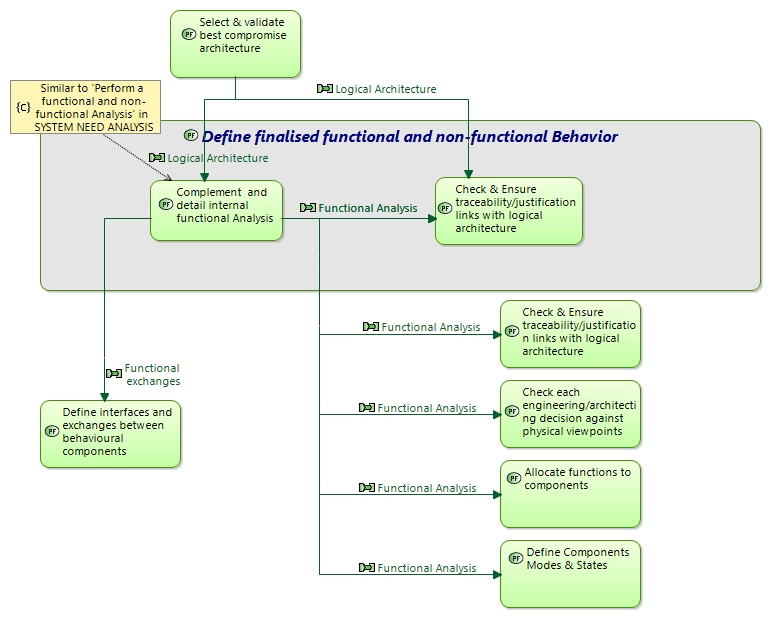

Define finalised functional and non-functional Behavior
Engineering activity
Engineering activities > Engineering Activities & Perspectives > DESIGN THE SOLUTION ARCHITECTURE > Design PHYSICAL ARCHITECTURE > Define finalised functional and non-functional Behavior
This task is similar to Logical Architecture 'Perform a functional and non-functional Analysis'.
Define a detailled functional behaviour that details and concretises former notional functional analysis, addressing:
- ready-to-develop description of designed behaviour
- greater level of detail resolving ambiguities of definition
- and design decisions choosing among various implementation options
- enrichment/confrontation with reused assets
- functions required for technical and technological implementation constraints.
Build and maintain justification and traceability links with Logical Architecture functions, functional chains, scenarios, modes &states, data etc.
More precisely,
- Identify functions required to satisfy and implement all Logical Architecture notional functions
- Complement them with necessary functions that were not identified Logical Architecture
- List and detail information, data flows, managed, exchanged and required by all these functions (internal or external to system); including required standards & interfaces
-
Identify functional chains traversing the system/SW in order to implement need defined functional chains (traversing functions & data flows); similarly define functional scenarios implementing those defined at Logical Architecture level;
enrich them if needed in order to appropriately define and check solution behaviour - Identify system/SW modes & states, relate them to functions; enrich them if needed
- Create and maintain traceability links with Logical Architecture (e.g. between functions, between functional chains, between scenarios).
Identify all major dimensioning needs, and [non-functional] constraints, relating them to the appropriate fonctions, functional chains, actors… and associated scenarios, and relate them to system scenarios: e.g.
- Identify non-functional constraints (performance, safety…) and relate them to concerned functions, functional chains…
- Identify industrial constraints not coming from customer/user: ability to produce, to test, to maintain, to sub-contract…
- When intending to reuse existing assets, check this functional/non-functional analysis against these assets for compatibility.
- Enrich system scenarios with non-functional & industrial constraints
-
Identify and select main (non functional) viewpoints (concerns) (*) susceptible to impact the functional analysis.
Each viewpoint should emphasise a specific set of constraints or expected behaviour, quality, respect of non-functional properties… At least one viewpoint should be dedicated to Reuse and Product Policy. - Try to order them in terms of importance, relative priority.
Ensure traceability/justification links between notional and finalised functional/non-functional analyses, and check consistency/coherency between them.
Input:
- Notional logical functional and non-functional analysis
- Reusable assets functional & non functional description
Output:
- Functional & non-functional analysis result (System functional breakdown + dataflow, functional chains, non functional constraints, scenarios…)
- Traceability between notional & finalised functional analyses
- List of relevant /critical viewpoints for the target system architecture
Target documents:
- System/Segment Design Document (SSDD)
Verification and Consistency checks:
External consistency:
- Between finalised and notional functional Analysis functions/data…
Internal consistency:
- Between all functional & non-functional elements
- Verify the functional/non-functional Behaviour Description: coherent, complete, relevant: no contradiction, no gap, no inaccuracy.
Details of Outputs Contents
-
 Allocated Exchange Items in OA
Allocated Exchange Items in OA
-
Modes & states in PA
-
Constraints
-
Functional Breakdown in PA
-
Functional chains in PA
-
Users/Actors in PA
-
Allocated Exchange Items in LA
-
Functional dataflow in LA
-
System Capabilities in PA
-
Functional dataflow in SA
-
Allocated functions in PA
-
Allocated Data in LA
-
Allocated Data in SA
-
Allocated functions in SA
-
Allocated Exchange Items in PA
-
Allocated functions in LA
-
Scenarios in PA
-
Allocated Data in OA
-
Allocated Exchange Items in SA
-
Allocated Data in PA
-
Functional dataflow in PA
Details of Inputs Contents
Related Diagrams
3Define finalised functional and nonfunctional Behavior Context

This figure describes the interactions of the considered task with other engineering activities.
Diagrams displaying "Define finalised functional and non-functional Behavior"
- 2-Design PHYSICAL ARCHITECTURE - Contents
- 3-Define finalised functional and non-functional Behavior - Context
- 4 - Customer Work
- 4 - Sub-contractor Work
- 5 - Models Management
- 4 - IVVQ Manager Work
- 4 - Non functional Specialty Engineering Work
- 4 - Data & Interface Manager Work
- 4 - Product Line & Configuration Managers Work
- 4 - Chief Architect Work
- 1 - First Level Tasks of Architecture Definition Perspectives